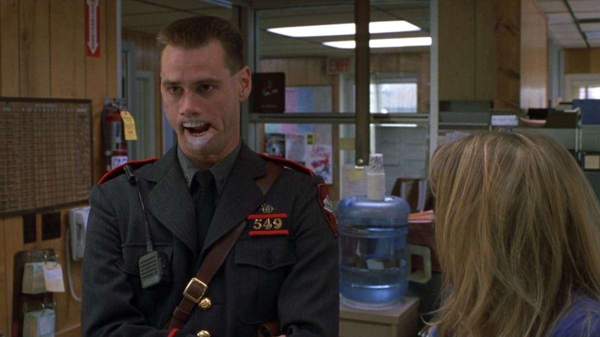

EU MESMO IRENE

SINOPSE
Charlie Baileygates é um policial veterano com 17 anos de carreira. Ele é trabalhador, prestativo e um pai devotado. Infelizmente, ele sofre de transtorno de dupla personalidade, e quando deixa de tomar seus remédios, vira Hank, a versão agressiva de Charlie. Os dois lados do agente se apaixonam pela mesma mulher e brigam entre si para conquistar o coração da moça.